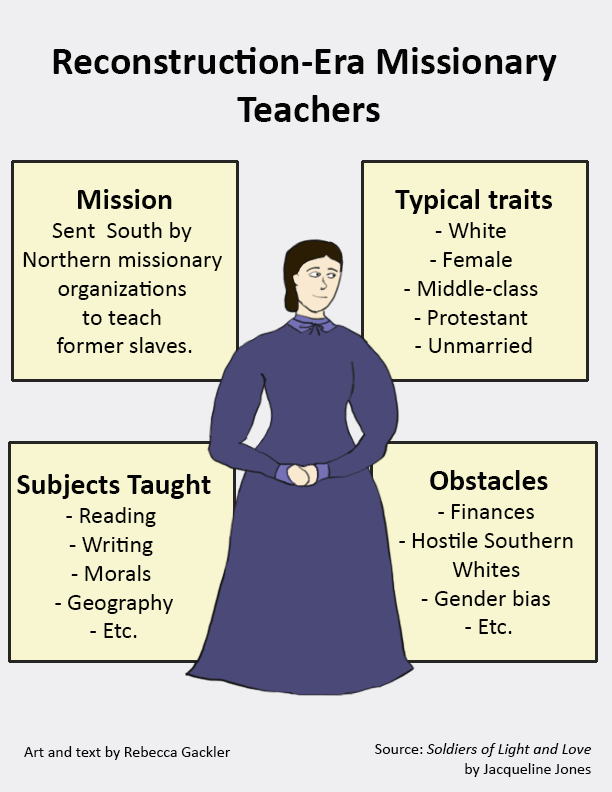

I designed this infographic based on the basic principles of visual design as outlined here and after practicing my basic drawing skills using this video. This infographic could also function as a wireframe.